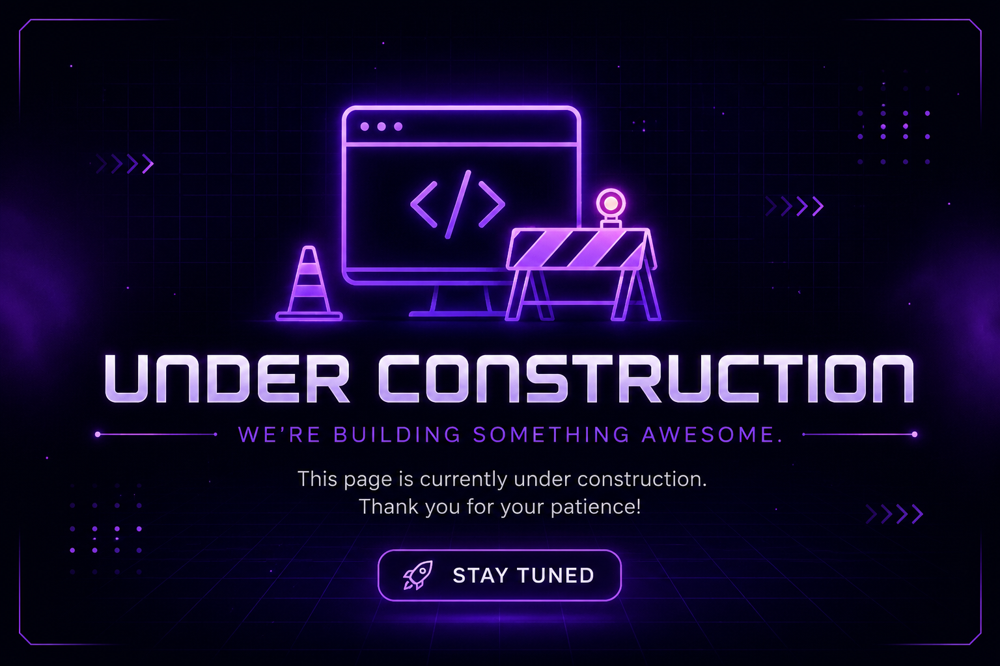

Recent Projects

Hyde Park Website
It was a great honor to be able to work on a website for the Hyde Park Kenwood CAC, a community organization that serves the Hyde Park neighborhood in Chicago. The website was worked by a team of 4 students, and I was responsible for the front-end development of the website, using HTML, CSS, and TypeScript to create a responsive and user-friendly interface. Furthemore, the website was built using Loveable AI to exponentially increase the speed of development and to create a more efficient workflow. The website was designed to be accessible and easy to navigate, with a focus on providing information about the organization's programs and services.
Made with: • HTML • CSS • TypeScript • React • Node.js • Loveable
View ProjectBread Tracker App
A full-stack web application that allows users to track their subscriptions, manage their accounts, and receive notifications about upcoming payments. I was responsible for the front-end development of the application, using React to create a responsive and user-friendly interface. The application was built using Node.js and Express for the back-end, and MongoDB for the database. The application was designed for capstone final project for DePaul University, and it was a great opportunity to apply the skills I have learned in my studies to a real-world project. It is not published yet, but I am proud of the work I have done on this project.
Made with: • HTML • CSS • TypeScript

Under Construction
More Projects are being Developed and will be added soon.
Made with • Potential
Not Yet Available